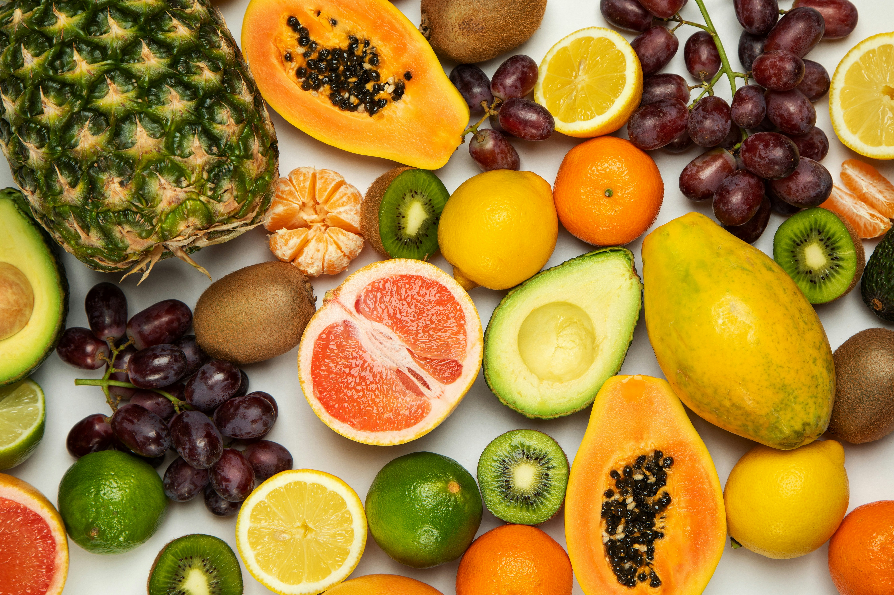
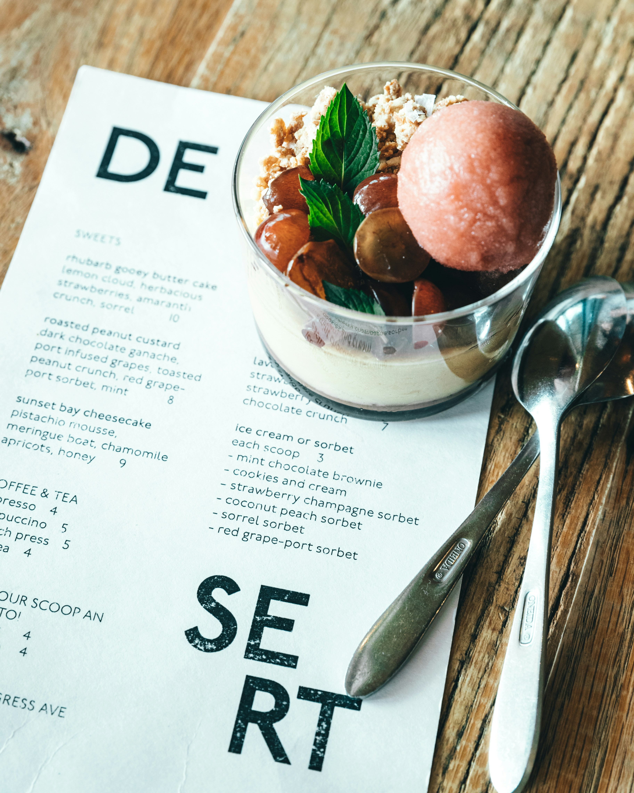
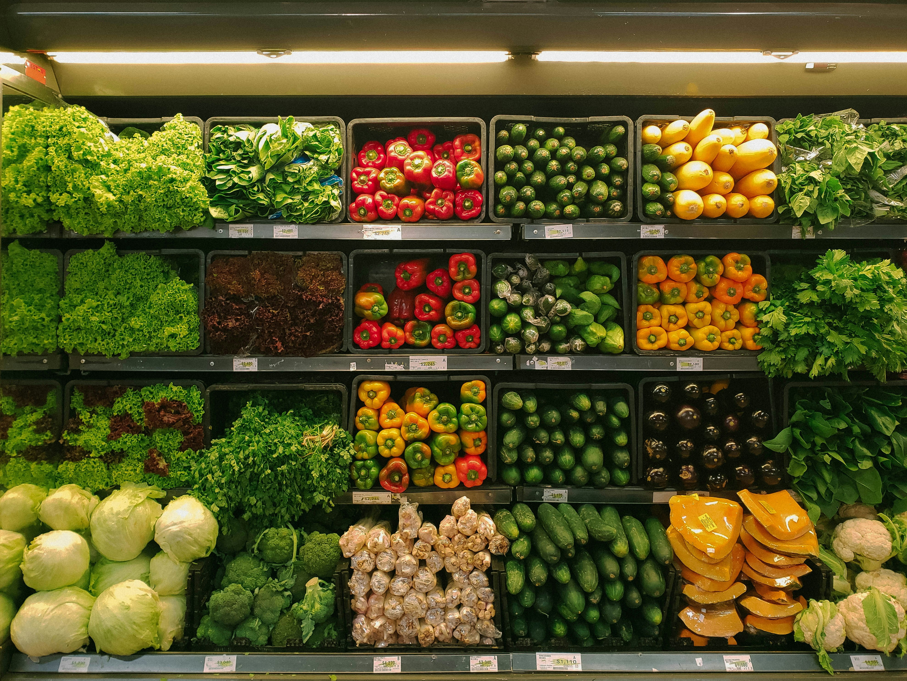
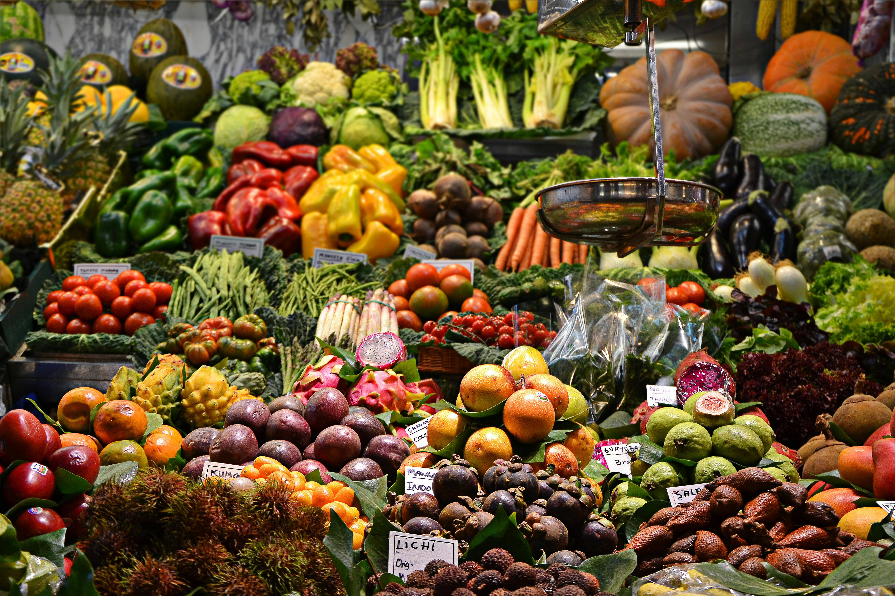

Produits Bio Frais Livrés Chez Vous
Catégories

Légumes Frais

Fruits Bio

Produits Laitiers

Boulangerie Bio
Featured Organic Restaurants

Green Kitchen
⭐ 4.8 (500+ reviews)
€€ • Organic • Vegan
30-45 min delivery

Fresh Farm Table
⭐ 4.6 (300+ reviews)
€€€ • Farm-to-table • Organic
20-35 min delivery
Nos Paniers d'Abonnement

Panier Hebdomadaire
Légumes et fruits frais de saison
- 7-8 variétés de légumes
- 3-4 variétés de fruits
- Livraison hebdomadaire

Panier Familial Mensuel
Portions familiales généreuses
- 10-12 variétés de légumes
- 5-6 variétés de fruits
- Livraison mensuelle
Nos Producteurs Locaux

Jean Dupont
🌿 Spécialiste en Légumes Bio
Région: Bas Rihn
Spécialités: Tomates, Salades, Carottes

Marie Martin
🍎 Propriétaire de Verger
Région: Provence
Spécialités: Pommes, Poires, Pêches